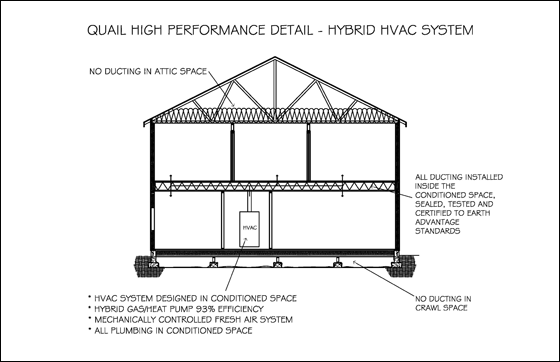
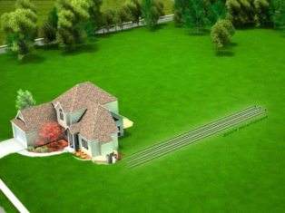
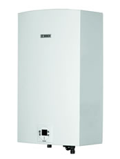
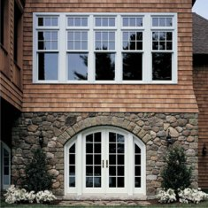

High Performance Construction - Heating and Cooling

Heat flows naturally from a warmer to a cooler space. In winter, the heat moves
directly from all heated living spaces to the outdoors and to adjacent unheated
attics, garages, and basements - wherever there is a difference in temperature.
During the summer, heat moves from outdoors to the house interior. To maintain
comfort, the heat lost in winter must be replaced by your heating system and
the heat gained in summer must be removed by your air conditioner.
Heating and cooling account for 50 to 70% of the energy used in the average
American home. Inadequate insulation and air leakage are leading causes of energy
waste in most homes. To read more about how Quail insulate, please click
here.
High-efficiency furnaces, in conjunction with a well built house and thermal
envelope (sealed and insulated ducts), can reduce heating and energy consumption.
At Quail Homes, we use open web floor trusses to enable us to install ducting
inside conditioned space. All the ducting are sealed, tested and certified to
Earth Advantage standard.
For heating and cooling, Quail Homes installs Bryant hybrid heat system
using a heat pump with a high efficient gas furnace with 93% efficiency as our
standard. The furnace is also located inside the condition space in the house.
To read more about how Quail Homes prevent air infiltration,
please click here, and
click here to download a more readable
Quail High Performance Detail drawing.
There are two types of heat pump: air source and geothermal.
Air-source heat pumps can provide efficient heating and cooling
for your home, especially if you live in a warm climate. When properly installed,
an air-source heat pump can deliver one-and-a-half to three times more heat
energy to a home than the electrical energy it consumes. This is possible because
a heat pump moves heat rather than converting it from a fuel, like in combustion
heating systems.
Although air-source heat pumps can be used in nearly all parts of the United
States, they do not generally perform well over extended periods of sub-freezing
temperatures. In regions with sub-freezing winter temperatures, it may not be
cost effective to meet all your heating needs with a standard air-source heat
pump.
However, new systems with gas heating as a backup are able to overcome this
problem. There is also a "Cold Climate Heat Pump" which shows promise, but is
currently facing manufacturing problems. In addition, a version called the "Reverse
Cycle Chiller" claims to be able to operate efficiently at below-freezing temperatures.

Geothermal heat pumps (sometimes referred to as GeoExchange,
earth-coupled, ground-source, or water-source heat pumps) have been in use since
the late 1940s. Geothermal heat pumps (GHPs) use the constant temperature of
the earth as the exchange medium instead of the outside air temperature. This
allows the system to reach fairly high efficiencies (300%-600%) on the coldest
of winter nights, compared to 175%-250% for air-source heat pumps on cool days.
While many parts of the country experience seasonal temperature extremes—from
scorching heat in the summer to sub-zero cold in the winter—a few feet below
the earth's surface the ground remains at a relatively constant temperature.
Depending on latitude, ground temperatures range from 45°F (7°C) to 75°F
(21°C). Like a cave, this ground temperature is warmer than the air above it
during the winter and cooler than the air in the summer. The GHP takes advantage
of this by exchanging heat with the earth through a ground heat exchanger. As
with any heat pump, geothermal and water-source heat pumps are able to heat,
cool, and, if so equipped, supply the house with hot water. Some models of geothermal
systems are available with two-speed compressors and variable fans for more
comfort and energy savings. Relative to air-source heat pumps, they are quieter,
last longer, need little maintenance, and do not depend on the temperature of
the outside air. A dual-source heat pump combines an air-source heat pump with
a geothermal heat pump. These appliances combine the best of both systems. Dual-source
heat pumps have higher efficiency ratings than air-source units, but are not
as efficient as geothermal units. The main advantage of dual-source systems
is that they cost much less to install than a single geothermal unit, and work
almost as well. Even though the installation price of a geothermal system can
be several times that of an air-source system of the same heating and cooling
capacity, the additional costs are returned to you in energy savings in 5–10
years. System life is estimated at 25 years for the inside components and 50+
years for the ground loop. There are approximately 50,000 geothermal heat pumps
installed in the United States each year.We highly recommend geothermal
heat pump, when the property size permits.

Tankless Water Heater is standard equipment at Quail Homes.
A tankless water heater has an oversized burner heats water flowing continuously
through the unit. Depending on the capacity of the burner and the volume of
water running through the unit, tankless water heaters can produce a constant
volume of heated water.
Although the burners of tank and tankless heaters are of comparable efficiency,
eliminating the tank of stored water and operating the heater only when there
is a demand for hot water significantly increases the annualized efficiency
of the heater. In general, conversion to a tankless heater will lower water
heating energy use by at least 20 percent. Replacing a 20-year-old model with
a new tankless one will likely result in savings of 30 percent or more.
Another advantage of eliminating the tank is space savings. A tankless water
heater uses much less space than a tank-style heater, and many models can be
installed on an exterior wall.
Windows play a critical role in creating sustainable and
high-performance housing. In addition to specifying the right windows to enable
more glass without boosting your heating bill, work to get the most out of each
window opportunity. Operable windows can be good for crossing ventilation, mitigating
the need for cooling energy and mechanical ventilation on summer evenings.
Windows should be selected to manage the quantity of heat loss and solar gain.
In a cloudy, heating-dominated marine climate, like ours, it is preferable to
use windows with a lower U-factor and a higher Solar Heat Gain Coefficient (SHGC).
The U-factor is a measure of heat transfer. The lower the U-factor the better
the window performs at stopping heat flow. The SHGC measures how well the window
blocks heat caused by sunlight. The lower the rating the less solar heat the
window transmits. The IECC, International Energy Conservation Code, requires
a window U-value of 0.35 or lower in the marine climate; no SHGC is specified.
At Quail Homes, we install only .30 U-Value or better vinyl windows.
*The above information came from Clark Public Utilities.